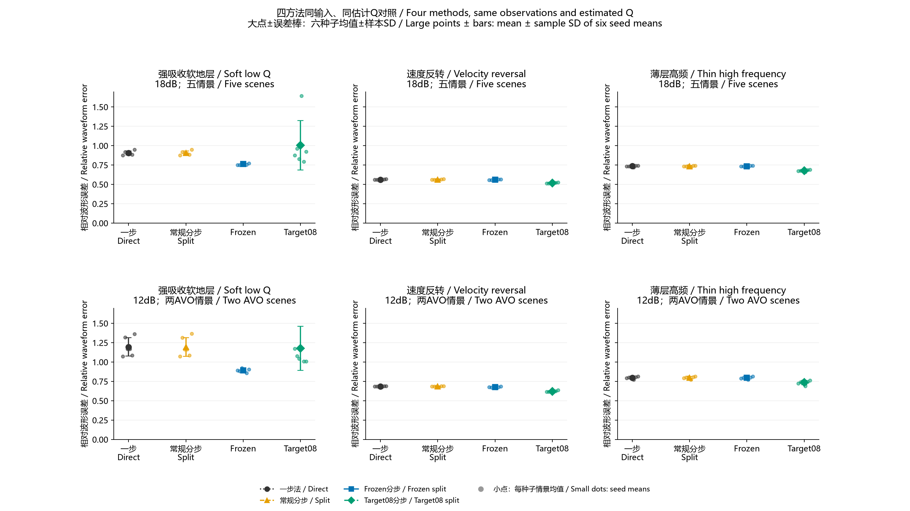
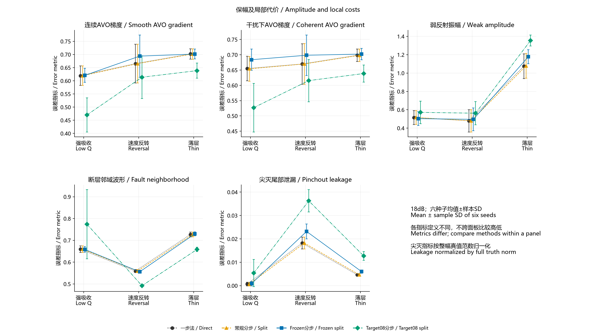
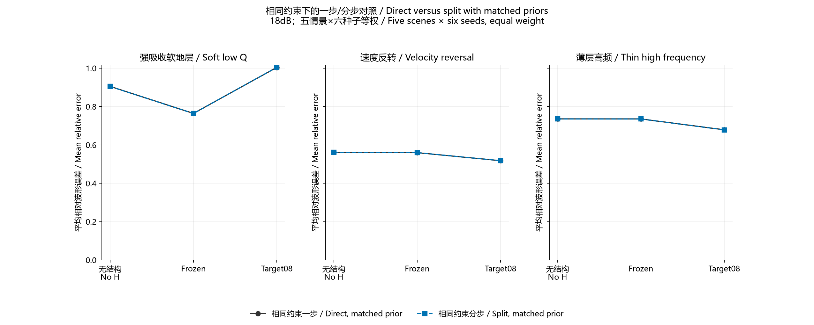

推荐研究主版：Frozen；保留相同先验的一步对照。
来源为既有 MATLAB 实验。本页只重算已存指标，没有新增反演。18 dB、三模型、五场景、六观测噪声种子；每模型只使用一份校准估计。下表相对误差越小越好，不是恢复正确率。
| 模型 / Model | 一步 / Direct | 常规分步 / Split | Frozen | Target08 |
|---|---|---|---|---|
| SoftLowQ | 0.905270 | 0.904653 | 0.763758 | 1.004657 |
| ThinHighFrequency | 0.735614 | 0.735339 | 0.735211 | 0.678583 |
| VelocityReversal | 0.561138 | 0.561334 | 0.559791 | 0.518034 |
| 等模型平均 / Equal mean | 0.734007 | 0.733775 | 0.686253 | 0.733758 |
Frozen 相对常规分步平均误差降低 6.48%。这属于有限合成证据，不能推断普遍改善。
保幅代价：薄层弱反射误差，常规分步1.079361，Frozen 1.178977，Target08 1.355316。不能只用整体平均判断效果。给一步法相同先验后，两条路线的模型平均差异最大约0.000618。
自动验收示例：Target08 对比 Frozen · 下一阶段任务书 · 完整历史报告
以下为已归档历史图 / Archived historical figure

以下为已归档历史图 / Archived historical figure

以下为已归档历史图 / Archived historical figure
